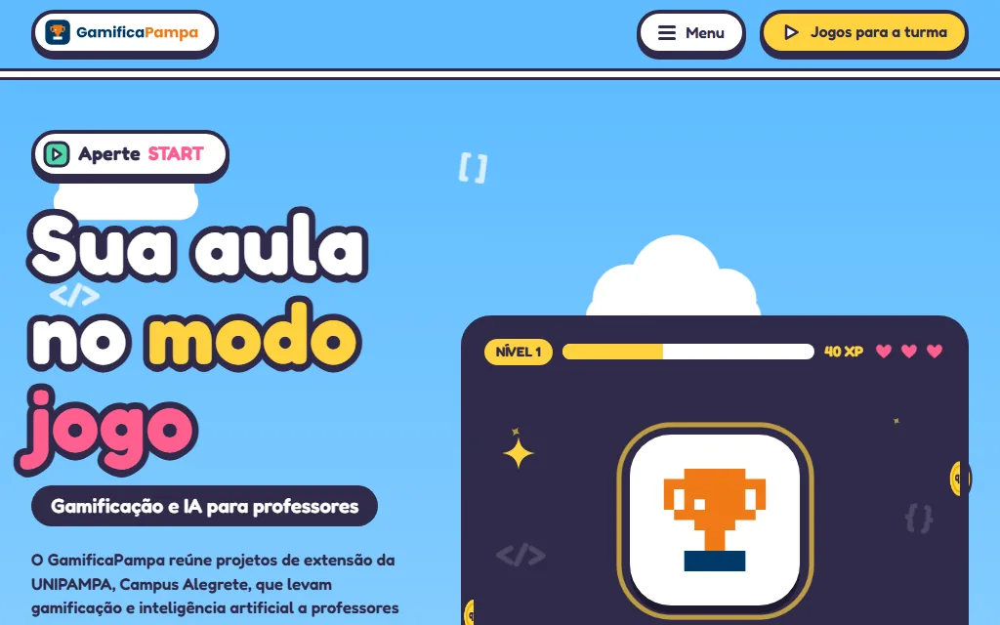
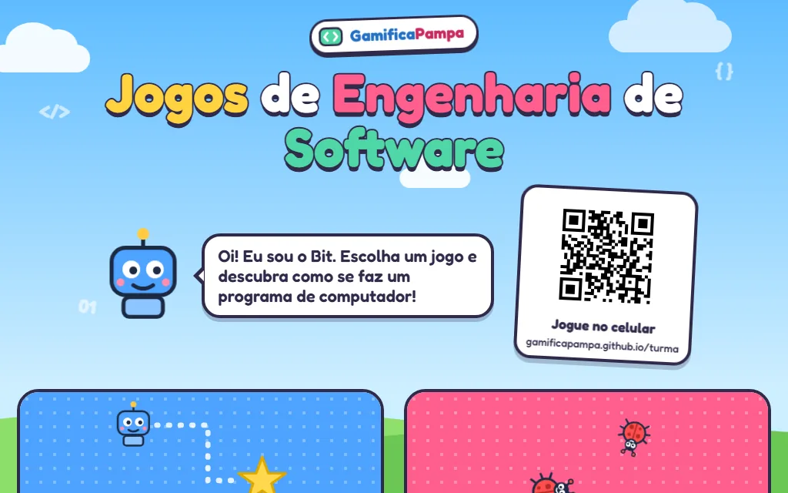
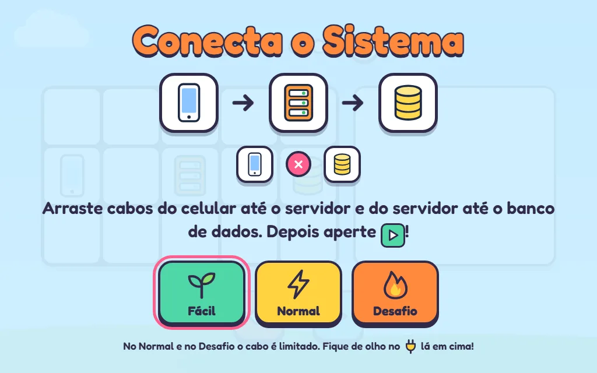
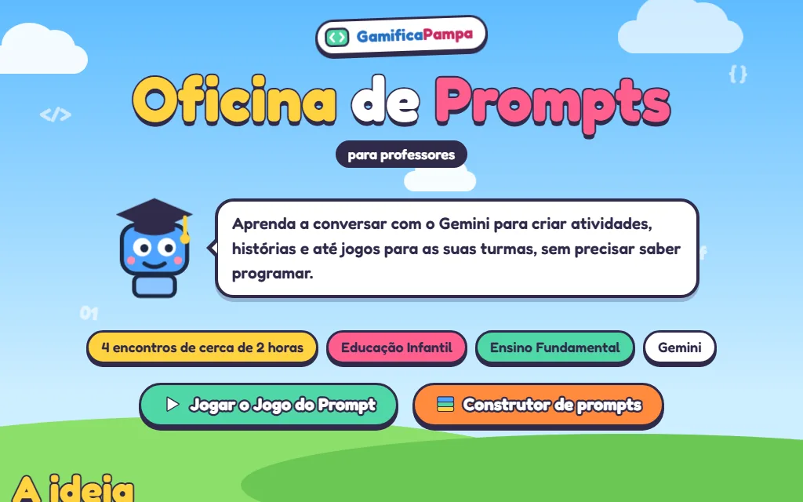

GamificaPampa
Gamificação e IA para professores da Educação Básica. Eu crio os jogos que apresentam a programação para crianças de 6 a 14 anos e a oficina que ensina professores a criar os próprios materiais com IA.

- Para quem
- Professores da Educação Básica e crianças de 6 a 14 anos
- Meu papel
- Criação dos jogos e da Oficina de Prompts, e a mudança deles para a organização
- Com quem
- Projetos Educador 5.0 e GamificaEdu, UNIPAMPA, Campus Alegrete
- Feito com
- HTML, CSS e JavaScript, publicado no GitHub Pages
A ideia
O GamificaPampa reúne projetos de extensão da UNIPAMPA, Campus Alegrete, que levam gamificação e inteligência artificial a professores da Educação Básica, em parceria com escolas públicas de Alegrete/RS, por meio de dois projetos: o Educador 5.0, sobre IA, e o GamificaEdu, sobre gamificação. O site trata a formação como um jogo: o professor passa por três níveis, Descobrir, Criar e Aplicar, até ter uma aula gamificada pronta para a turma.
A minha parte são os recursos pedagógicos, o que chega na mão do professor e das crianças. Nos jogos, as crianças montam sequências de comandos, caçam bugs, programam em dupla e descobrem como um aplicativo conversa com um servidor e um banco de dados. Para os professores, a Oficina de Prompts mostra como usar o Gemini para criar atividades, histórias e até jogos para as próprias turmas, sem precisar saber programar.
O que tem dentro
🎮 Jogos para a turma
- Robô pega a estrela 6+
- Ninja dos Bugs 6+
- Programação em Dupla 7+
- Conecta o Sistema 8+
- Arcade do Código, com três jogos e placar
- Caça aos Bugs!
- Missão Dev, para feira de ciências
📚 Materiais da aula
- Slides para o projetor
- Roteiro de 50 minutos
- Folhas de atividades
- Mapas das 15 fases da Programação em Dupla
- Certificado para as crianças
- Telas de estande para eventos
✨ Oficina de Prompts
- Formação em quatro encontros de cerca de 2 horas
- Curso online com teste final
- Jogo do Prompt e construtor de prompts
- Biblioteca de prompts e Gems prontos
- Guia do professor e galeria de jogos
Como foi pensado
-
QR code para a turma
O menu da turma tem um endereço curto para escrever no quadro, gamificapampa.github.io/turma, e um QR code grande para projetar. Os recursos têm o botão Compartilhar, que manda o link pelo WhatsApp ou pelo Google Classroom.
-
Pronto para imprimir
Roteiro, folhas de atividades, mapas das fases e certificados saem em PDF tamanho A4, gerados a partir das próprias páginas.
-
Sem cadastro
Nenhum jogo pede login, e o site não coleta dados das crianças. É abrir e jogar, no celular, no tablet ou no projetor.
-
Acessível
Cores com contraste conferido, zoom liberado e áreas de toque maiores nos jogos mais rápidos.
De projeto pessoal para a organização
Os jogos e a Oficina nasceram num repositório meu, no meu GitHub. Quando viraram parte do GamificaPampa, passaram para a organização GamificaPampa no GitHub, cada coisa no repositório certo: o que professores e crianças usam ficou público em recursos-pedagogicos, e o kit de quem conduz a formação foi para um repositório privado da equipe.
A regra mais importante da mudança foi não quebrar nenhum endereço. Já havia QR codes impressos em estandes, slides, cartazes e convites, e links mandados por WhatsApp e Classroom. Por isso cada endereço antigo ganhou um destino novo numa tabela, um script confere todos eles, e o site antigo vira uma ponte que leva cada link para o lugar certo. A mudança é feita por pull requests, uma fase por vez, e cada fase só começa depois que a anterior está no ar.
Por dentro



Nas escolas e nos eventos
Em 14 de outubro de 2026 o GamificaPampa foi apresentado em dois lugares: aos professores e à equipe gestora da Escola Tancredo Neves, em Alegrete, e ao Grupo de Pesquisa Diálogos do Pampa, na UNIPAMPA, Campus São Borja, na palestra "IA na Educação". Nas duas, os jogos e a Oficina de Prompts aparecem como o que o hub já tem no ar.
Meu papel
Criei os jogos, os materiais da aula e a Oficina de Prompts, e preparo a mudança deles para a organização. O jogo Robô pega a estrela é de Paulo Severo, e os outros jogos seguem o mesmo estilo. O hub e os projetos de extensão são coordenados pelos professores Paulo Silas Severo de Souza e Silvio Ereno Quincozes.
O GamificaPampa segue em desenvolvimento: novos jogos e materiais vão entrando, e os que já existem continuam sendo melhorados, como a Oficina, atualizada quando a interface do Gemini mudou.